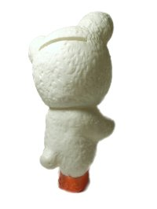

文明堂カンカンベア貯金箱。約11㎝

この貯金箱は、文明堂の新店舗が出来るとき配られていたそうです。
いつ頃配られていたのでしょうか？今でも配られることがあるのかな？
もし、ご存知の方がいらっしゃったら教えてください。
参考文献：『マスコット物語2』綱島理友著
カンカンベアキーホルダー
頂き物です。キーホルダーの金具が昔っぽい形。
他の色もあるようです。見た事があるのは緑色。他にもありそうですね。
5体集めて、並べてみたい♪それが私の目標です（笑）2体あるので、
あと3体頑張って集めたいと思っています。（本当は相方の希望＾＾；）
ネットで昔流れていたCMを見ましたが、ぬいぐるみが踊っていたんですね。
しかも男の子と女の子が混じっているなんて！
このカンカンベアは男の子でしょうか？それとも女の子なのかな？
全く関係ないですが、ロシアのアニメのチェブラーシカはこのカンカンベアが
モデルだそうです。チェブラーシカの設定もよくわからない生き物だし、似てますね。
最終更新 2008.06.17